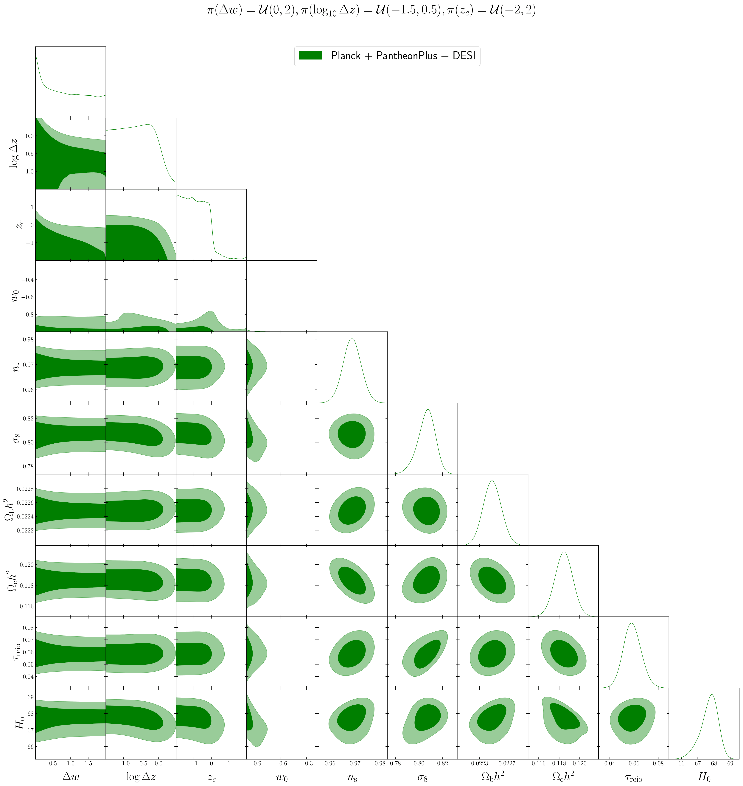
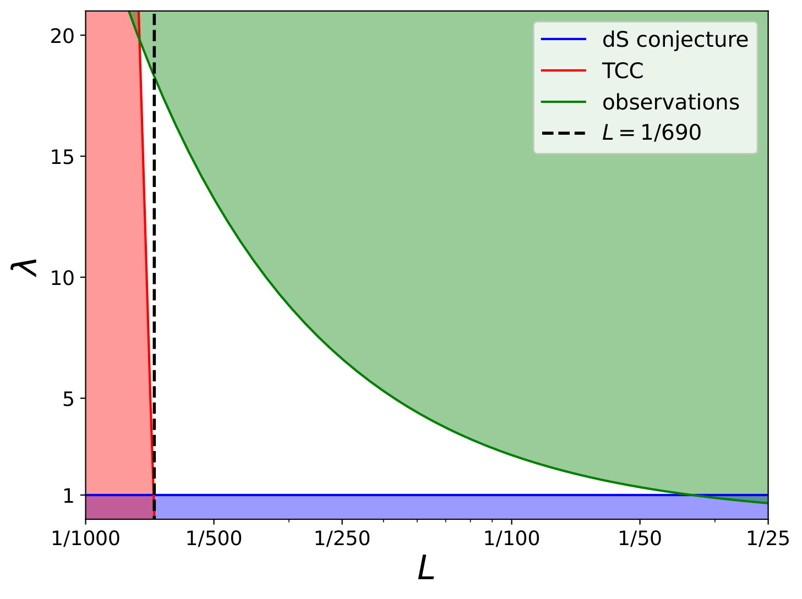
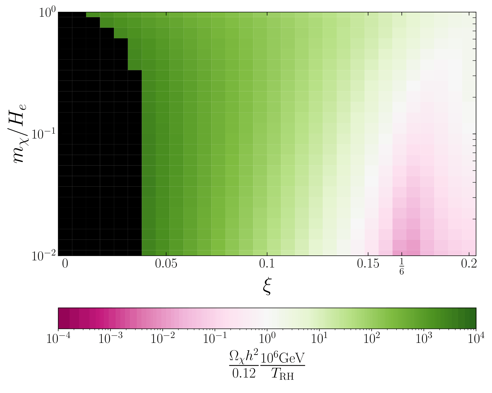
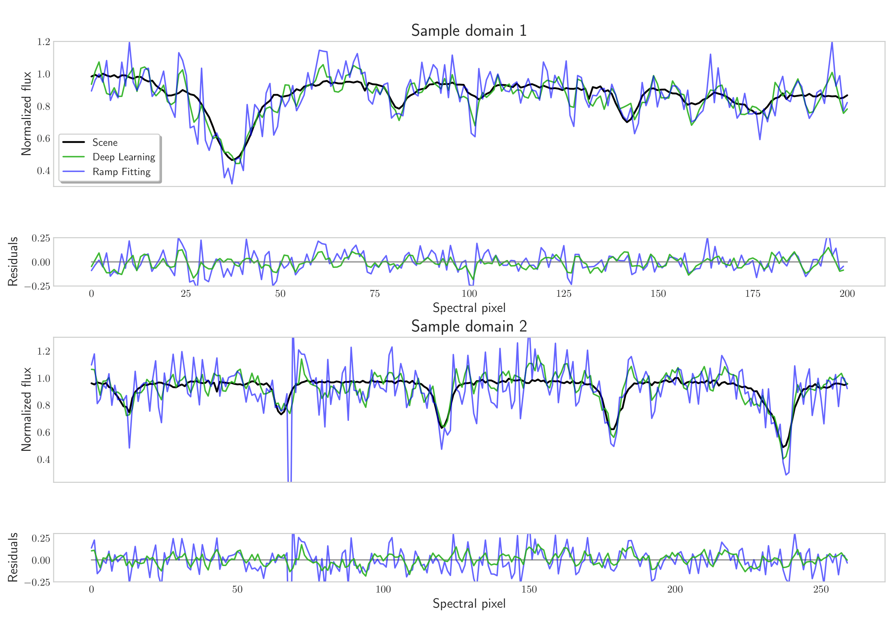

Guillaume Payeur
Hi! Welcome to my website!
I'm a PhD student in physics at the Université de Montréal under the supervision of Laurence Perreault-Levasseur. I'm also affiliated with Mila, Ciela and the Trottier Space Institute.
Recently, I've been developing machine learning algorithms aimed at inference problems in cosmology and astrophysics. Previously, I've published work at intersection of cosmology and high-energy theoretical physics.
Find all of my publications Here.
Publications

Do Observations Prefer Thawing Quintessence?
Investigating if data supports dark energy as a particle over a cosmological constant.
Read Full Publication
Swampland Conjectures Constraints on Dark Energy from a Highly Curved Field Space
Theoretical constraints on dark energy models in quantum gravity.
Read Full Publication
Completely Dark Matter from Rapid-Turn Multifield Inflation
Study of a dark matter candidate particle and its production in the early universe.
Read Full Publication
Correlated Read Noise Reduction in Infrared Arrays Using Deep Learning
Instrumental noise reduction in astronomical instruments with machine learning.
Read Full Publication